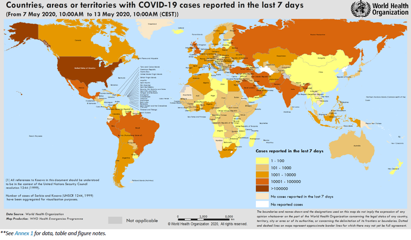
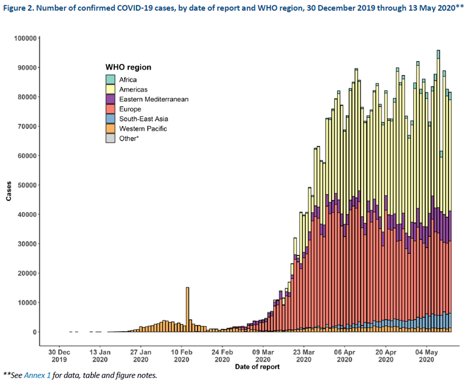
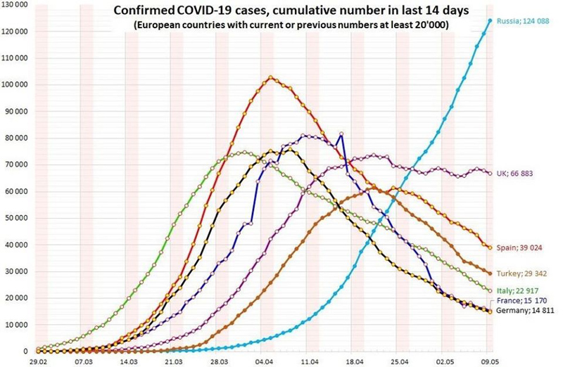
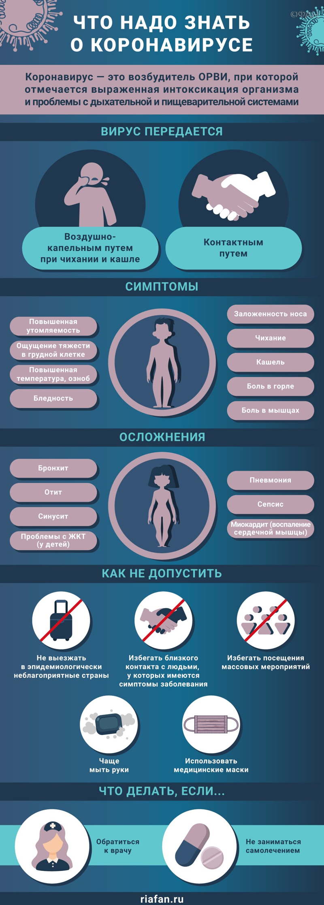

Прололжаем мониторить ситуацию с коронавирусом в мире. На сайте ВОЗ размещены данные на 13.05.2020 о распространении в мире инфекции, вызванной коронавирусом Covid-19 (SARS-CoV-2)
Прололжаем мониторить ситуацию с коронавирусом в мире. На сайте ВОЗ размещены данные на 13.05.2020 о распространении в мире инфекции, вызванной коронавирусом Covid-19 (SARS-CoV-2).
- Всего в мире зарегистрировано 4170424 подтверждённых случаев заболевания коронавирусом Covid-19, ситуация продолжает развиваться; в том числе 242271 в России, 16425 в Украине, 25840 в Республике Беларусь, 5417 в Казахстане (рис. 1).
- Наиболее неблагоприятная ситуация по коронавирусу складывается в США (1322054 случаев заболевания), в России (242271) — поздравляю, мы уже на втором месте!, в Испании (228030), в Италии(97689),
в Великобритании (226467), в Италии (221216).
Рис. 1. Распространение нового коронавируса Covid-19: страны и территории с подтверждёнными случаями на 13.05.2020 г.

Рис. 2. Число подтвержденных случаев COVID-19 по дате отчета и региону ВОЗ, с 30 декабря 2019 г. по 13 мая 2020 г.

По данным мониторинга ArcGIS, число инфицированных на текущий момент 4315679 (242 271 в России; да, мы уже на втором месте…), из них 294879 летальных случаев (2212 в России, но статистика не учитвает всех больных, умерших от пневмонии).
Другие материалы
Рис. 3. Статистика роста заболеваемости

Рис. 4. Симптомы коронавируса
